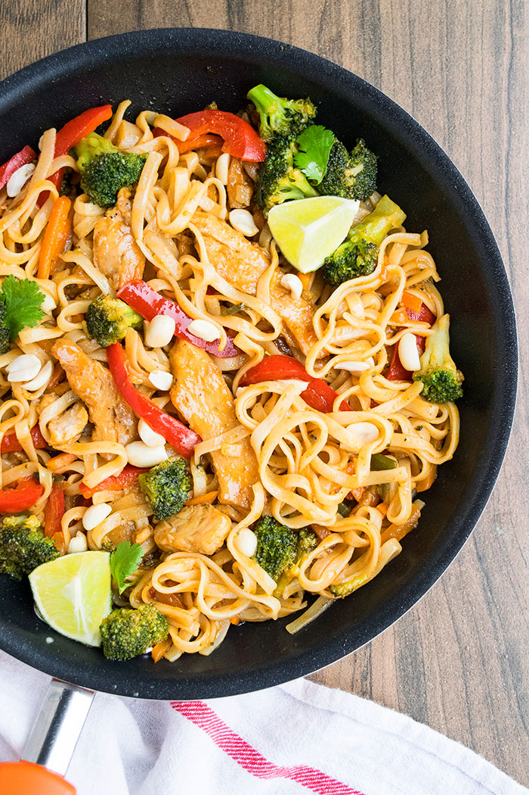

Chicken Pad Thai:

Description
Pad Thai is a popular street food dish that’s served all over Thailand. It typically features rice noodles, bean sprouts, peanuts, scrambled egg, and a source of protein (I’ve heard that shrimp is most common in Thailand).
Ingredients:
- Flat Rice Noodles
- Coconut oil
- Onion
- Chicken breasts
- Garlic
Steps:
- Cook rice noodles according to package directions, drain, rinse under cold water; set aside.
- To a very large skillet at least 4 inches deep, add the oils (vegetable and/or olive oil may be substituted for the sesame and coconut oil), onion, and sauté the onion over medium-high heat for about 5 minutes, or until onion is beginning to soften; stir intermittently.
- Add the chicken and cook for about 3 minutes, or until done; stir and flip nearly constantly to ensure even cooking. The chicken will cook very quickly if it's sliced sufficiently thin.
- the garlic, ginger, and cook for about 1 minute, or until fragrant; stir nearly constantly.
- Add the cabbage, carrots, soy sauce, fish sauce, lime juice, stir to combine, cover skillet with a lid, reduce heat to medium-low, and simmer for about 3 minutes, or until cabbage wilts and softens. Remove lid and stir.
-
- Add the honey and stir to combine.